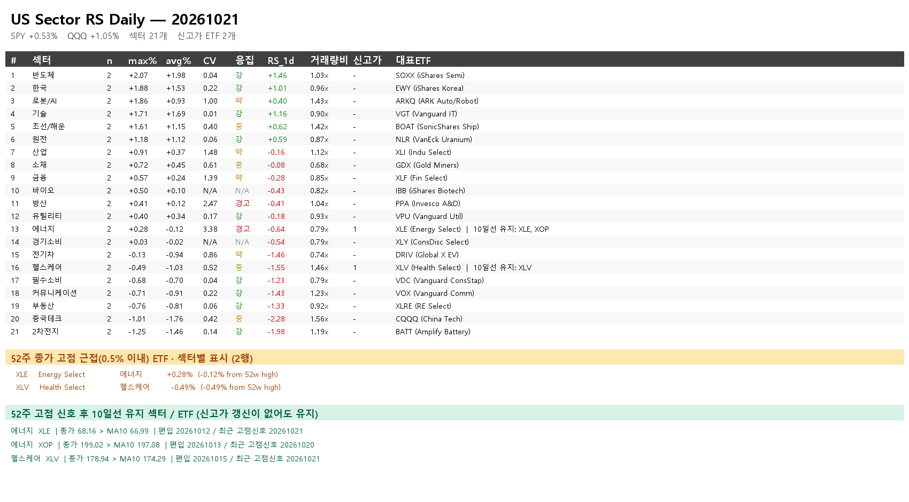

뉴스 본문# 10월 22일 오전 미국 섹터·일정
뉴스 본문: 원문 열기
미검토 일정 후보 2,045건을 미검토 상태로 보존합니다. 사용자 요청에 따라 이를 공개 표시하고 발송하며, 전체 일정 검증 완료를 뜻하지 않습니다.
## 미국 섹터 · 10월 21일 완료 세션
스크립트 종료코드 0, 43/43 티커 확보. FinanceDataReader와 보존 가격 캐시 원천이며 거래소 공식 가격의 독립 검증은 아닙니다. 섹터 내 중복·종가 결측은 없고 평균 등락률·SPY 상대강도·5일 수익률·MA10을 재계산했습니다. ITA는 두 섹터에 편성되어 섹터별 ETF 수를 합산하면 중복입니다.
SPY 당일 +0.53%; 아래 5일은 각 ETF 5거래일 수익률의 단순평균이며 일일 섹터 평균을 복리 합성한 값이 아닙니다.
반도체 · 2개 ETF · 평균 +1.98% · SPY 대비 +1.46%p · 5일 평균 -1.58%
한국 · 2개 ETF · 평균 +1.53% · SPY 대비 +1.01%p · 5일 평균 -1.91%
로봇/AI · 2개 ETF · 평균 +0.93% · SPY 대비 +0.40%p · 5일 평균 -0.76%
기술 · 2개 ETF · 평균 +1.69% · SPY 대비 +1.16%p · 5일 평균 -0.74%
조선/해운 · 2개 ETF · 평균 +1.15% · SPY 대비 +0.62%p · 5일 평균 -2.82%
원전 · 2개 ETF · 평균 +1.12% · SPY 대비 +0.59%p · 5일 평균 -0.10%
산업 · 2개 ETF · 평균 +0.37% · SPY 대비 -0.16%p · 5일 평균 +0.76%
소재 · 2개 ETF · 평균 +0.45% · SPY 대비 -0.08%p · 5일 평균 +3.65%
금융 · 2개 ETF · 평균 +0.24% · SPY 대비 -0.28%p · 5일 평균 +2.83%
바이오 · 2개 ETF · 평균 +0.10% · SPY 대비 -0.43%p · 5일 평균 +4.09%
방산 · 2개 ETF · 평균 +0.12% · SPY 대비 -0.41%p · 5일 평균 +1.22%
유틸리티 · 2개 ETF · 평균 +0.34% · SPY 대비 -0.18%p · 5일 평균 +0.73%
에너지 · 2개 ETF · 평균 -0.12% · SPY 대비 -0.64%p · 5일 평균 +0.69%
경기소비 · 2개 ETF · 평균 -0.02% · SPY 대비 -0.54%p · 5일 평균 +3.47%
전기차 · 2개 ETF · 평균 -0.94% · SPY 대비 -1.46%p · 5일 평균 -2.32%
헬스케어 · 2개 ETF · 평균 -1.03% · SPY 대비 -1.55%p · 5일 평균 +2.10%
필수소비 · 2개 ETF · 평균 -0.70% · SPY 대비 -1.23%p · 5일 평균 +1.17%
커뮤니케이션 · 2개 ETF · 평균 -0.91% · SPY 대비 -1.43%p · 5일 평균 -1.69%
부동산 · 2개 ETF · 평균 -0.81% · SPY 대비 -1.33%p · 5일 평균 +1.32%
중국테크 · 2개 ETF · 평균 -1.76% · SPY 대비 -2.28%p · 5일 평균 -2.63%
2차전지 · 2개 ETF · 평균 -1.46% · SPY 대비 -1.98%p · 5일 평균 -4.16%
## 52주 고점 신호 후 10일선 유지
신호는 252거래일 종가 최고치의 0.5% 이내 접근이며 장중 사상 최고가와 다릅니다. 신호 뒤 종가>SMA10을 유지한 ETF만 표시합니다. 신호 이전 252개 종가 미확보 기간은 판단 불가입니다.
헬스케어 XLV · 종가 178.94 / MA10 174.29 · 편입 20261015 · 5일 +2.86%
에너지 XLE · 종가 68.16 / MA10 66.99 · 편입 20261012 · 5일 +0.78%
에너지 XOP · 종가 199.02 / MA10 197.08 · 편입 20261013 · 5일 +0.60%
## 날짜순 기업 일정·IR·재공시
IR·재공시는 거시 일정이나 사업 개시일과 다릅니다. 전일 확인 항목을 이월했고 개최·실행 완료를 새로 확인한 것은 아닙니다.
2026-10-21 · 다보링크는 10월 20일까지 25매매거래일 연속 종가 1,000원 미만이었습니다. 10월 21일부터 추가 5매매거래일 지속되면 관리종목으로 지정될 수 있다는 조건부 안내이며 지정 완료가 아닙니다.
원문: http://dart.fss.or.kr/dsaf001/main.do?rcpNo=20261020900712
2026-10-21 · DGI는 10월 20일 코스닥시장위원회의 상장유지 결정에 따라 10월 21일부터 매매거래가 재개될 예정입니다. 오전 07:00 현재 실제 거래 재개 결과는 확인 전입니다.
원문: http://dart.fss.or.kr/dsaf001/main.do?rcpNo=20261020900755
2026-10-22 · LS ELECTRIC IR 10월 22일 09:00 예정
원문: http://dart.fss.or.kr/dsaf001/main.do?rcpNo=20261021800162
2026-10-22 · 유니드 IR 10월 22일 09:00 예정
원문: http://dart.fss.or.kr/dsaf001/main.do?rcpNo=20261021800239
2026-10-22 · 휴메딕스 IR 10월 22~23일 09:00~17:00 예정
원문: http://dart.fss.or.kr/dsaf001/main.do?rcpNo=20261021900363
2026-10-26 · 10월 26일부터 범한퓨얼셀·듀켐바이오의 NXT 거래 제외 예정입니다. KRX 정규장 거래정지가 아닙니다.
원문: 원문 열기
2026-10-27 · 삼성카드는 10월 27일 10:00에 2026년 3분기 실적 컨퍼런스콜과 Q&A를 개최하고 같은 날 IR 자료를 게시할 예정입니다.
원문: http://dart.fss.or.kr/dsaf001/main.do?rcpNo=20261020800355
2026-10-28 · 두산퓨얼셀 IR 10월 28일 16:30 예정
원문: http://dart.fss.or.kr/dsaf001/main.do?rcpNo=20261021800122
2026-10-28 · HD현대중공업 IR 10월 28일 14:00 예정
원문: http://dart.fss.or.kr/dsaf001/main.do?rcpNo=20261021800389
2026-10-28 · HD한국조선해양 IR 10월 28일 14:00 예정
원문: http://dart.fss.or.kr/dsaf001/main.do?rcpNo=20261021800394
2026-10-28 · HD현대 IR 10월 28일 16:00 예정
원문: http://dart.fss.or.kr/dsaf001/main.do?rcpNo=20261021800480
2026-10-29 · SKC는 10월 28일 IR 자료를 게시하고 10월 29일 09:00부터 30일까지 서울 여의도 등에서 기관투자자 대면 미팅을 예정하고 있습니다. 회사 사정으로 일정이 달라질 수 있습니다.
원문: http://dart.fss.or.kr/dsaf001/main.do?rcpNo=20261020800480
2026-10-30 · 엠씨넥스 주식 소각 10월 30일 예정
원문: http://dart.fss.or.kr/dsaf001/main.do?rcpNo=20261021800106
2026-11-02 · 포스코퓨처엠 IR 11월 2일 11:00 예정
원문: http://dart.fss.or.kr/dsaf001/main.do?rcpNo=20261021800131
2026-11-02 · 포스코DX IR 11월 2일 13:30 예정
원문: http://dart.fss.or.kr/dsaf001/main.do?rcpNo=20261021800235
2026-11-03 · HRS 배당 지급 11월 3일 예정 · 배당 기준일은 9월 30일
원문: http://dart.fss.or.kr/dsaf001/main.do?rcpNo=20261021900361
2026-11-04 · 넥센타이어 IR 11월 4일 15:30 예정
원문: http://dart.fss.or.kr/dsaf001/main.do?rcpNo=20261021800300
2026-11-20 · 포스코 HBI 투자 검토 재공시 11월 20일 예정 · 투자 개시일 아님
원문: http://dart.fss.or.kr/dsaf001/main.do?rcpNo=20261021800102
2026-11-20 · 삼성에피스 브라질 공급 관련 재공시 11월 20일 예정 · 납품일 아님
원문: http://dart.fss.or.kr/dsaf001/main.do?rcpNo=20261021800142
2026-11-21 · 푸드나무 인수 검토 재공시 11월 21일 예정 · 인수 완료일 아님
원문: http://dart.fss.or.kr/dsaf001/main.do?rcpNo=20261021900648
2026-11-23 · 제이알글로벌리츠는 11월 23일 서울 교원 종각빌딩에서 제3-1회 10~11시, 제3-2회 13~14시, 제4회 15~16시, 제6회 17~18시 사채권자집회를 순차 개최할 예정입니다. 채무조정 안건 상정이며 가결이나 법원 인가 완료가 아닙니다.
원문: http://dart.fss.or.kr/dsaf001/main.do?rcpNo=20261020800752
2027-01-19 · 코람코라이프인프라리츠는 안양물류센터 매입을 검토 중이며 확정된 사항은 없다고 밝혔습니다. 결정 시 또는 3개월 이내 재공시 예정이며 2027년 1월 19일은 재공시 예정일로 자산 취득일이 아닙니다.
원문: http://dart.fss.or.kr/dsaf001/main.do?rcpNo=20261020800340
## 상대 날짜·연월 계획 / 확정 날짜 아님
엔비디아 발표: 싱가포르 테스트 2027년 2월·KYEC 미국 생산 2027년 4월 목표, SPIL 확대 2027년 중반, 암코 증설 2028년 말 목표. 하루 단위 확정일로 임의 환산하지 않습니다. 우크라이나 회담의 11월 초·중순은 희망·제안이며 확정 일정이 아닙니다.
원문: 원문 열기
## 주요 거시 일정 검토
신규 실업수당 등 속보 일정은 공식 달력 대조가 남아 확정 표에서 제외했습니다. 미검토 후보는 별도 장부에 보존되어 있습니다.
